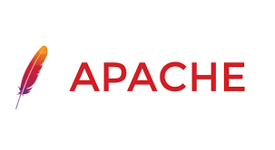
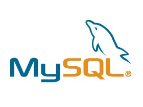

Wamp
WampServer est une plate-forme de développement Web sous Windows pour des applications Web dynamiques à l’aide du serveur Apache2, du langage de scripts PHP et d’une base de données MySQL. Il possède également PHPMyAdmin pour gérer plus facilement vos bases de données.
Apache
Le projet Apache HTTP Server vise à développer et à maintenir un serveur HTTP open source pour les systèmes d'exploitation modernes, notamment UNIX et Windows. L'objectif de ce projet est de fournir un serveur sécurisé, efficace et extensible qui fournit des services HTTP en synchronisation avec les normes HTTP actuelles. Le serveur HTTP Apache ("httpd") a été lancé en 1995 et est le serveur Web le plus populaire sur Internet depuis avril 1996. Il a célébré son 25e anniversaire en tant que projet en février 2020. Le serveur HTTP Apache est un projet de The Apache Software Foundation .
MySQL
MySQL est un système de gestion de bases de données relationnelles SQL open source développé et supporté par Oracle. Le SQL (Structured Query Language) est un langage permettant de communiquer avec une base de données. Ce langage informatique est notamment très utilisé par les développeurs web pour communiquer avec les données d’un site web. SQL.sh recense des cours de SQL et des explications sur les principales commandes pour lire, insérer, modifier et supprimer des données dans une base.

PHP
PHP (officiellement, ce sigle est un acronyme récursif pour PHP Hypertext Preprocessor) est un langage de scripts généraliste et Open Source, spécialement conçu pour le développement d'applications web. Il peut être intégré facilement au HTML.